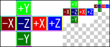

Cube maps are created under Adobe Photoshop as shown below by arranging images for each view direction in a horizontal cross pattern without gaps between images.
| +Y | |||
| -X | -Z | +X | +Z |
| -Y |
(The blank parts in each of the four corners are not used.)
The image for each view direction must be a cube (of the same width and height) sized in a power of 2 between 8 and 1024.
The coordinate axes of each view direction image under Photoshop are defined as follows.
| View direction | Vertical direction | Right direction |
|---|---|---|
| +X | +Y | +Z |
| -X | +Y | -Z |
| +Y | +Z | +X |
| -Y | -Z | +X |
| +Z | +Y | -X |
| -Z | +Y | +X |
On CTR systems, the -Y direction is upward. Data rotated 180 degrees is exported as additional information to the TGA files and to the CTEX files for the images representing the +X, -X, +Z, and -Z directions.
Run the mipmap creation plug-in on the images arranged in a horizontal cross shape to create a cube map mipmap.

CONFIDENTIAL